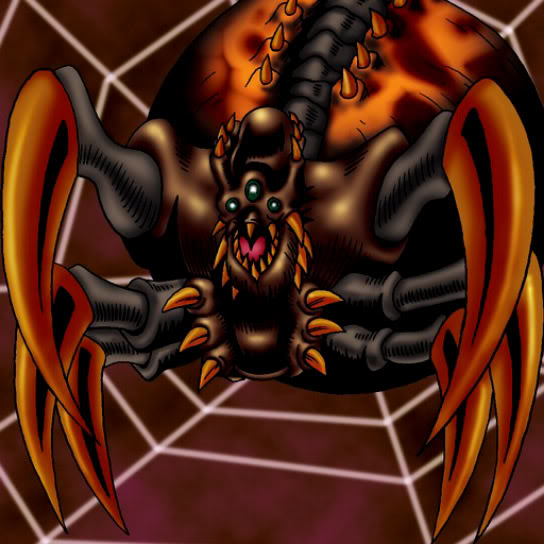

Jirai Gumo

Description: "Cancels all power increases or decreases of an enemy monster in battle. Does not cancel bonus effects such as terrain or Leader ability effects. Decreases LP by 100 points for each space moved."
STATS
ATK: 2200
DEF: 100DECK COST
Deck Cost per Card: 28EFFECT NOT IMPLEMENTED
Fusion List (1 Possible Fusions)
- Jirai Gumo + Metalmorph = Launcher Spider